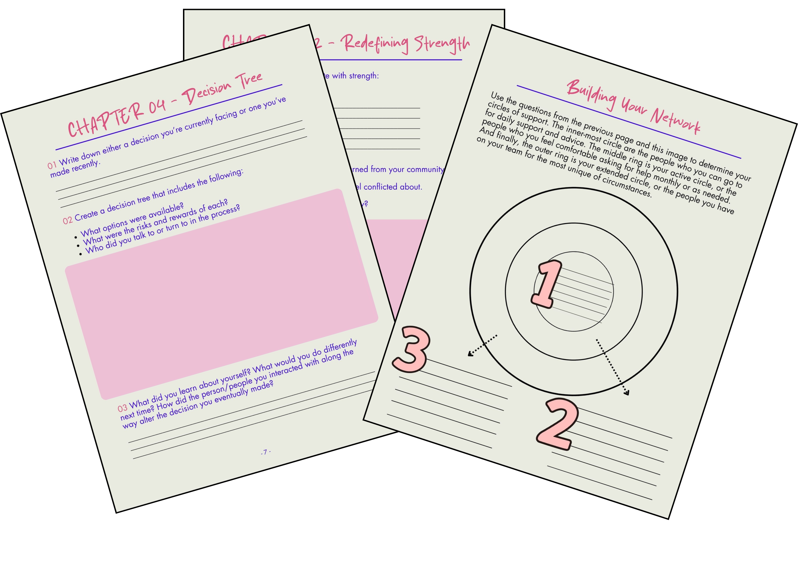
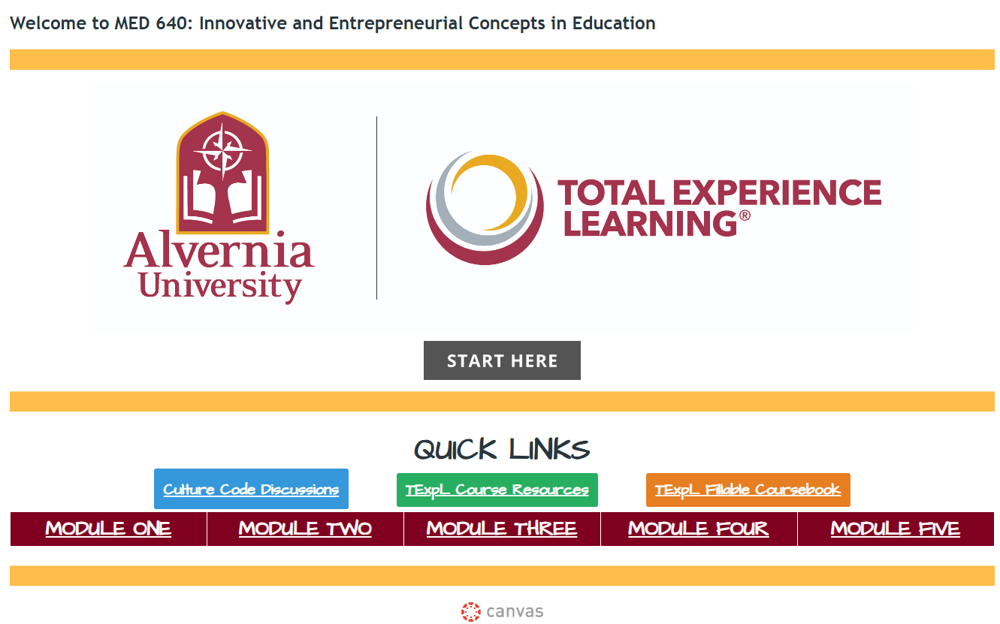
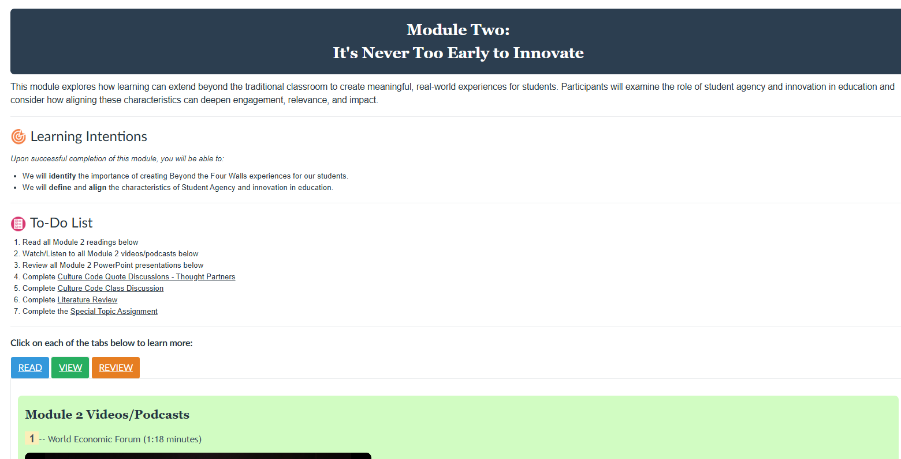
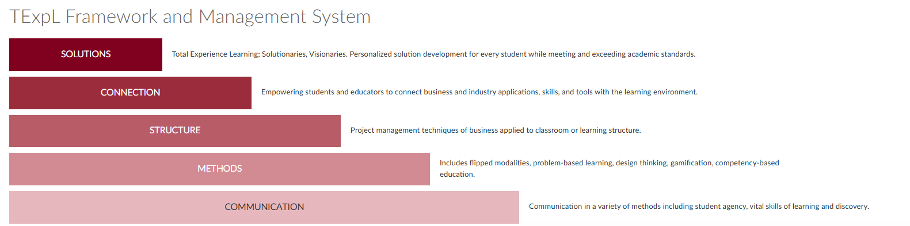
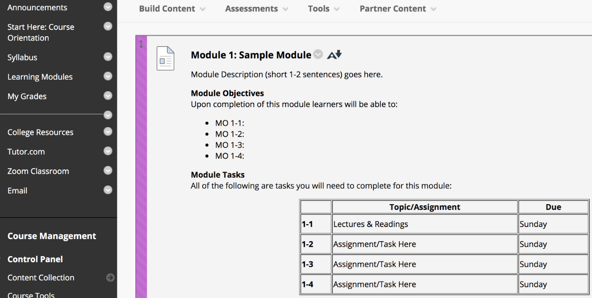
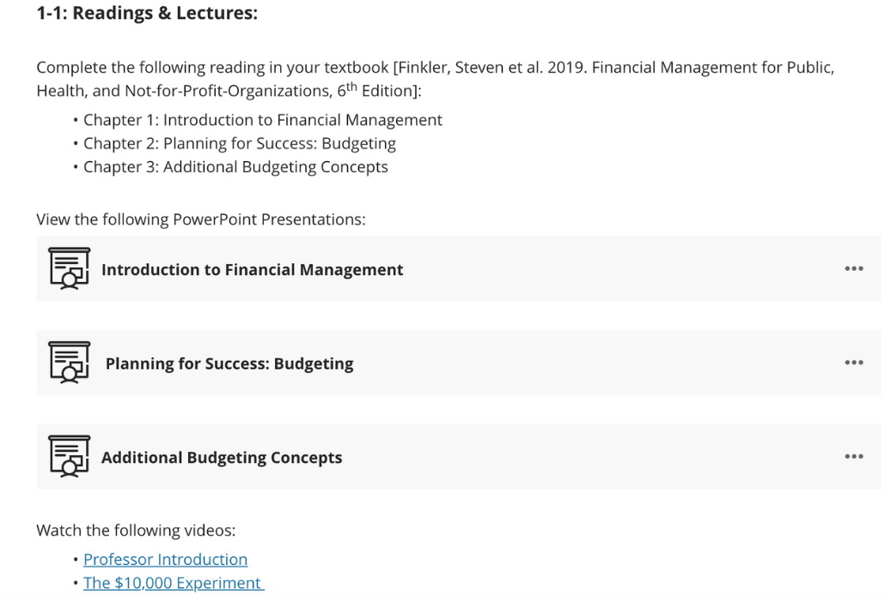
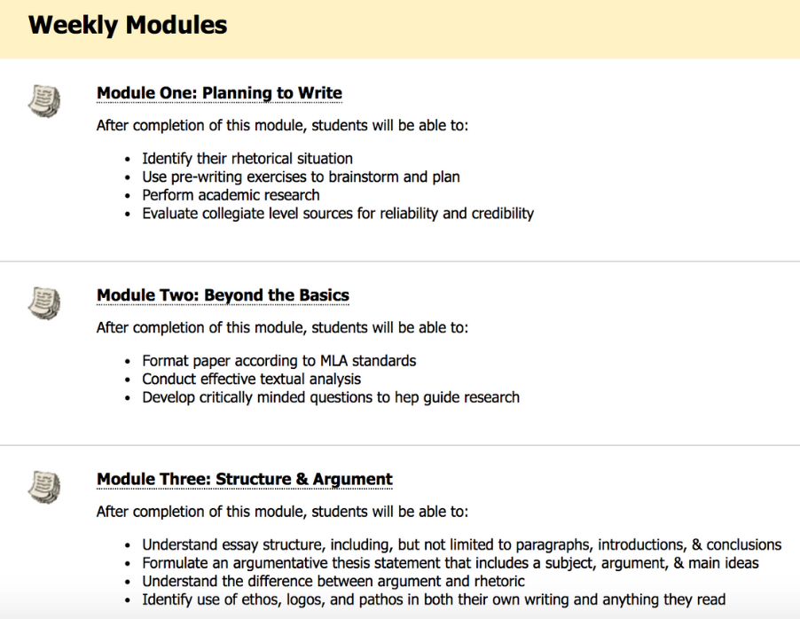

Articulate Rise · Corporate
Critical Response Process for Corporate QA
Liz Lerman's Critical Response Process, adapted from the arts world for use in agile QA team feedback loops.
Launch the module →Most instructional designers hand off the finished plan to someone else to build. We design the learning experience and build it ourselves, from full LMS courses to the videos, media, and materials inside them. Our work spans multiple LMS platforms, degree programs, and corporate training alike.
Liz Lerman's Critical Response Process, adapted from the arts world for use in agile QA team feedback loops.
Launch the module →A micro-learning deck demystifying one of the most misused punctuation marks: the semicolon.
View →First of a 14-course sequence used at 20+ universities internationally.
View →
A sequence of graduate education courses built for Alvernia University's TExpL® Institute (Total Experience Learning), each with a custom homepage, structured modules, and supporting visuals for the framework itself.






An instructional video for the grant-funded WOLFIE Writers initiative, written, illustrated, and produced start to finish using VideoScribe and Audacity.
A companion piece in the WOLFIE Writers series, also written, illustrated, and produced solo.